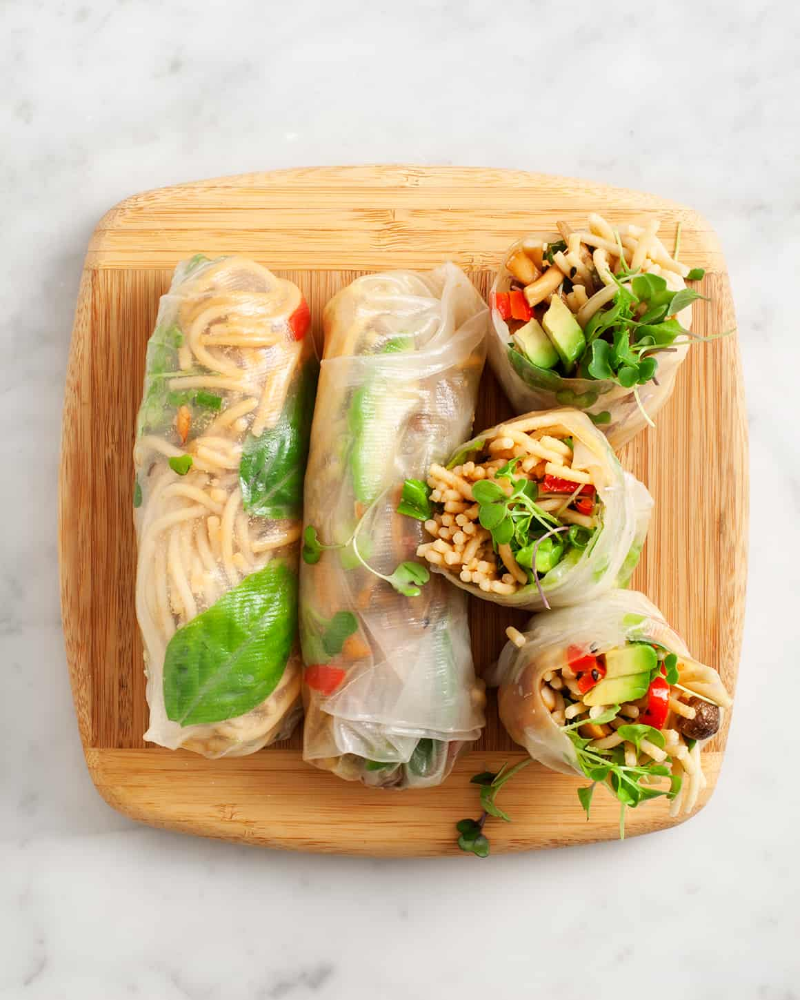

Better spring rolls by me

Vegan
Spring rolls that are not fried on oil, filled with tofu, vegetables and noodles
Preparation time: 20-30 minutes
Portion: according to the amount of ingredients you choose
Ingredients
- Rice paper
- Bowl of water to wet our paper
- Tofu
- Seasoning up to your taste (I choose curry and chicken powder)
- Fresh or frozen vegetables
- Soy sauce
- Sesame seeds
Preparation
- add seasoning to your tofu
- fry the tofu on a pan with a bit of oil on medium heat
- while tofu is cooking, boil a pot of water and cook your noodles
- after 3-4 minutes put the vegetables in
- put the rice paper in the bowl of water for 10 seconds
- take it out and put it on a plate
- start putting the tofu and noodles on the rice paper
- top it with soy sauce and sesame seeds
- close the rice paper
- put it on a preheated pan for 1-2 minutes for each side
- repeat these steps till you run out of ingredients
- done and dusted
go to the main page